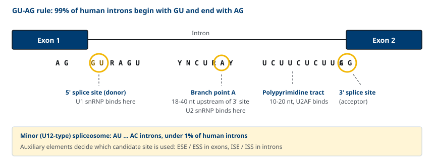
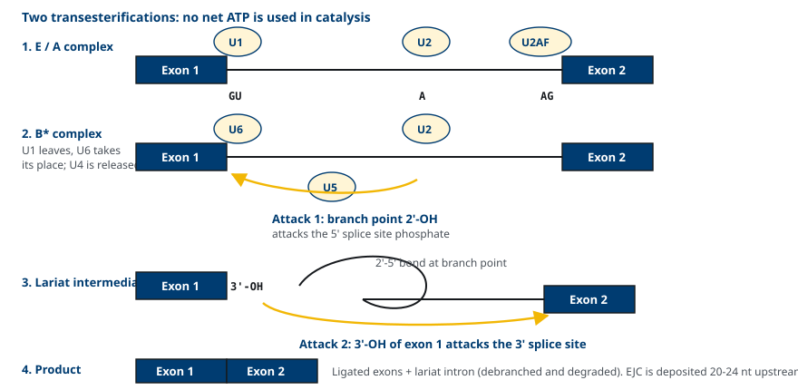
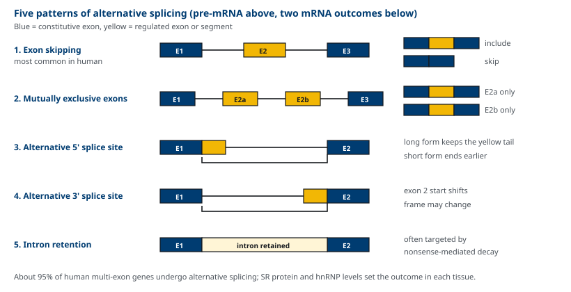
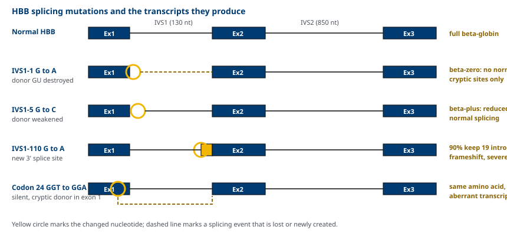
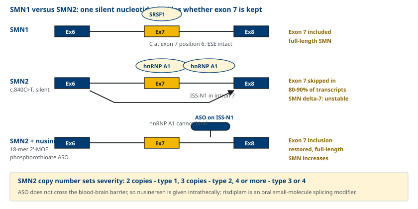
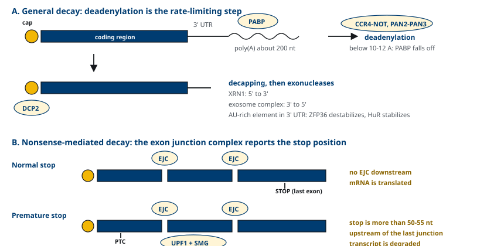

M03-W03-L01 · 분자유전학과 계통별 의학생화학특론
Splicing 이상과 질환, RNA 안정성 조절
Aberrant Splicing in Disease and Regulation of RNA Stability
학습목표
- 진핵세포 pre-mRNA 가공의 세 가지 사건을 구분하고 splicing이 왜 필요한지 설명한다.
- 5' splice site, 3' splice site, 분지점, polypyrimidine tract의 consensus 서열을 적는다.
- Spliceosome의 조립 순서와 두 번의 transesterification 반응을 단계별로 설명한다.
- 대체 splicing의 다섯 가지 유형을 구분하고 단백질 다양성과의 관계를 설명한다.
- HBB, SMN2, *DMD*의 splicing 변이가 질환을 만드는 기전을 각각 설명한다.
- Antisense oligonucleotide 치료가 splicing을 바꾸는 원리를 nusinersen과 eteplirsen으로 설명한다.
- 5' cap, poly(A) 길이, AU-rich element, nonsense-mediated decay, microRNA가 mRNA 양을 결정하는 방식을 비교한다.
선수지식
- M03-W02-L03 전사와 RNA 가공의 개요 — RNA polymerase II, 5' cap, poly(A) 부가
- M03-W01-L02 DNA의 구조와 염기 상보성 — RNA-RNA 염기쌍 형성의 기초
- M03-W02-L01 유전자의 구성 — exon과 intron의 정의, split gene의 개념
강의 구성
- 1. pre-mRNA 가공과 splicing의 생물학적 의의
- 2. Splice site consensus 서열과 분지점
- 3. Spliceosome의 조립과 두 번의 transesterification
- 4. 대체 splicing의 유형과 단백질 다양성
- 5. Splice site 변이와 β-thalassemia
- 6. *SMN2*와 spinal muscular atrophy — 침묵 변이가 만드는 exon 탈락
- 7. Antisense oligonucleotide와 splicing 교정 치료
- 8. mRNA 안정성의 조절 — poly(A), AU-rich element, nonsense-mediated decay
- 9. microRNA에 의한 발현 조절과 RNA 표적 치료
1. pre-mRNA 가공과 splicing의 생물학적 의의
진핵세포의 단백질 암호화 유전자는 split gene이다. 암호 서열(exon)이 암호가 아닌 서열(intron)에 의해 끊겨 있다. RNA polymerase II는 유전자 전체를 한 가닥의 pre-mRNA로 전사하므로, 세포질로 나가 번역되기 전에 intron을 정확히 잘라내고 exon을 이어 붙여야 한다. 이 과정이 splicing이다.
pre-mRNA 가공은 세 가지 사건으로 이루어지고, 세 사건은 모두 전사가 진행되는 동안 RNA polymerase II의 C-terminal domain에 모인 인자들에 의해 공전사적(co-transcriptional)으로 일어난다.
- 5' capping: 전사가 25~30 뉴클레오타이드 진행된 직후 5' 말단에 7-methylguanosine이 5'→5' triphosphate 결합으로 붙는다. exonuclease로부터 보호하고 번역 개시 인자 eIF4E의 결합 자리가 된다.
- 3' 말단 가공과 poly(A) 부가: AAUAAA 신호 하류에서 절단된 뒤 poly(A) polymerase가 아데닐산 약 200개를 붙인다.
- Splicing: intron 제거와 exon 연결.
사람 유전자의 intron은 수와 크기가 모두 크다. 평균적으로 유전자 하나에 intron이 8~9개 있고, exon의 평균 길이는 약 150 뉴클레오타이드인 데 비해 intron은 수백에서 수십만 뉴클레오타이드에 이른다. DMD 유전자는 79개 exon이 2.2 Mb에 걸쳐 흩어져 있고, 완성된 mRNA는 약 14 kb다. 전사체의 대부분이 버려지는 서열이므로, 잘라내는 지점이 한 뉴클레오타이드만 틀려도 reading frame 전체가 어긋난다.
Splicing이 필요한 이유는 두 가지로 묶인다. 첫째, intron을 제거하지 않으면 번역이 불가능하다. 둘째, 같은 pre-mRNA에서 exon의 조합을 달리하면 여러 단백질을 만들 수 있다. 사람의 단백질 암호화 유전자는 약 2만 개인데 단백질 종류는 그보다 훨씬 많다. 그 차이의 상당 부분이 대체 splicing에서 나온다.
2. Splice site consensus 서열과 분지점
Spliceosome이 intron의 경계를 찾는 근거는 intron 양 끝과 내부에 있는 짧은 consensus 서열이다. 네 가지 요소가 함께 작동한다.
- 5' splice site(donor site): intron의 시작이다. consensus는
AG | G U R A G U로, exon 마지막 두 염기 AG 다음 intron이 GU로 시작한다(R은 purine). - 분지점(branch point): 3' splice site보다 18~40 뉴클레오타이드 상류에 있는 아데노신 한 개다. consensus는
Y N C U R A Y이고 밑줄 친 A가 분지점이다. - polypyrimidine tract: 분지점과 3' splice site 사이의 pyrimidine(U, C)이 풍부한 구간으로 길이는 10~20 뉴클레오타이드다.
- 3' splice site(acceptor site): intron이 AG로 끝난다.
intron이 GU로 시작하고 AG로 끝나는 이 규칙을 GU-AG rule이라 부르며, 사람 intron의 약 99%가 여기 해당한다(major spliceosome, U2-type). 나머지 1% 미만은 AU로 시작하고 AC로 끝나는 minor spliceosome(U12-type)이 처리한다.

consensus 서열만으로는 경계를 다 설명할 수 없다. 사람 유전체에는 consensus와 비슷하지만 실제로는 쓰이지 않는 cryptic splice site가 수없이 많다. 어떤 자리가 실제로 쓰이는지는 보조 조절 서열과 거기에 결합하는 단백질이 결정한다.
| 조절 서열 | 위치 | 결합 단백질 | 효과 |
|---|---|---|---|
| ESE (exonic splicing enhancer) | exon 내부 | SR protein (SRSF1 등) | 인접 splice site 사용 촉진 |
| ESS (exonic splicing silencer) | exon 내부 | hnRNP A1 등 | 사용 억제 |
| ISE (intronic splicing enhancer) | intron 내부 | TIA-1, Nova 등 | 촉진 |
| ISS (intronic splicing silencer) | intron 내부 | hnRNP A1, PTB | 억제 |
exon은 짧고 intron은 길다. 따라서 spliceosome은 긴 intron을 찾는 방식이 아니라 짧은 exon을 ESE·SR protein의 도움으로 알아보는 방식으로 작동하며, 이를 exon definition이라 한다. 이 구조가 중요한 임상적 결과를 낳는다. exon 내부의 염기 치환이 아미노산을 바꾸지 않더라도 ESE를 망가뜨리면 그 exon이 탈락할 수 있다. 뒤에서 다루는 *SMN2*와 HBB codon 24 변이가 그 예다.
3. Spliceosome의 조립과 두 번의 transesterification
Splicing을 수행하는 기구는 spliceosome이다. 다섯 가지 snRNP(small nuclear ribonucleoprotein; U1, U2, U4, U5, U6)와 100종 이상의 단백질로 이루어진 복합체로, 미리 조립되어 있지 않고 pre-mRNA에 순서대로 모인다. 각 snRNP의 snRNA는 pre-mRNA나 다른 snRNA와 염기 상보성으로 결합하므로, 인식의 특이성이 단백질이 아니라 RNA에서 나온다.
조립 순서는 다음과 같다.
1. U1 snRNP가 5' splice site에 염기쌍으로 결합한다. 동시에 SF1이 분지점에, U2AF가 polypyrimidine tract와 3' splice site AG에 결합한다(E complex). 2. U2 snRNP가 ATP를 쓰며 분지점에 결합한다. U2 snRNA와의 염기쌍 형성에서 분지점 아데노신이 짝을 찾지 못해 이중나선 밖으로 돌출(bulge)되고, 이로써 그 2'-OH가 반응에 쓰일 수 있게 된다(A complex). 3. U4/U6·U5 tri-snRNP가 들어온다(B complex). 4. 구조 재배열이 일어난다. U1이 5' splice site에서 떨어지고 U6이 그 자리를 차지하며, U4가 U6에서 떨어져 나간다. 남은 U6과 U2가 서로 염기쌍을 이루어 촉매 중심을 만들고, U5가 두 exon의 말단을 가까이 붙잡는다(활성화된 B* complex).
촉매 반응은 두 번의 transesterification이다. 각 단계에서 포스포다이에스터 결합 하나가 끊기고 하나가 새로 생기므로, 반응 전체에 ATP가 소비되지 않는다. ATP는 조립과 재배열에 쓰인다.
- 1단계: 분지점 아데노신의 2'-OH가 5' splice site의 인에 공격을 가한다. 5' exon이 떨어져 나오고, intron은 분지점에서 5' 말단과 2'-5' 결합을 이룬 lariat(올가미) 구조가 된다.
- 2단계: 떨어진 5' exon의 3'-OH가 3' splice site의 인에 공격을 가한다. 두 exon이 연결되고 lariat intron이 방출된다.
방출된 lariat은 debranching enzyme이 2'-5' 결합을 풀고 nuclease가 분해한다. snRNP는 재사용된다.

연결이 끝난 자리에는 exon junction complex(EJC)가 연결 지점의 20~24 뉴클레오타이드 상류에 남는다. EJC는 핵에서 세포질로의 수출, 번역 효율, 그리고 뒤에 다루는 nonsense-mediated decay의 표지로 쓰인다. splicing의 흔적이 mRNA에 남아 이후 운명을 결정한다는 점이 이 수업의 두 주제를 연결하는 고리다.
4. 대체 splicing의 유형과 단백질 다양성
대체 splicing(alternative splicing)은 같은 pre-mRNA에서 exon을 다르게 조합해 여러 mRNA를 만드는 것이다. 사람의 exon이 둘 이상인 유전자 중 약 95%가 대체 splicing을 거친다. 유형은 다섯 가지로 정리된다.
- exon skipping(cassette exon): 특정 exon이 들어가거나 빠진다. 사람에서 가장 흔한 유형이다.
- 상호 배타적 exon(mutually exclusive exons): 두 exon 중 하나만 들어간다.
- 대체 5' splice site: 같은 exon의 끝 지점이 달라진다.
- 대체 3' splice site: 같은 exon의 시작 지점이 달라진다.
- intron retention: intron이 남는다. 식물에서 흔하고 사람에서는 조절 수단으로 쓰인다.
여기에 대체 promoter와 대체 poly(A) 부위 사용이 더해지면 한 유전자에서 나오는 전사체 수가 더 늘어난다.

조직마다 결과가 다른 이유는 SR protein과 hnRNP의 상대적 농도가 조직마다 다르기 때문이다. SR protein이 많으면 약한 splice site도 쓰이고, hnRNP A1이 많으면 쓰이지 않는다. 즉 대체 splicing은 서열이 정해 놓은 고정된 결과가 아니라 세포 상태에 따라 조절되는 양적 현상이다.
의학적으로 중요한 예가 여럿 있다.
| 유전자·전사체 | 대체 splicing의 결과 | 의학적 의미 |
|---|---|---|
| CALCA | 갑상선에서 calcitonin, 신경조직에서 CGRP | 조직 특이적 호르몬 생성 |
| TNNT2, MYH7 등 | 태아형과 성인형 isoform 전환 | 심근의 발생 단계별 기능 |
| Fibronectin | 간세포형은 EIIIA·EIIIB exon 제외, 섬유아세포형은 포함 | 혈장형과 세포외기질형의 차이 |
| Immunoglobulin 중쇄 | 막결합형과 분비형 | B세포 성숙에 따른 전환 |
| BCL2L1 | Bcl-xL(항세포사멸)과 Bcl-xS(촉진) | 같은 유전자에서 반대 기능 |
5. Splice site 변이와 β-thalassemia
β-thalassemia는 HBB 유전자의 변이로 β-globin 사슬 합성이 줄거나 없어지는 질환이다. 보고된 변이는 300종을 넘고 그중 상당수가 단백질 서열이 아니라 splicing을 바꾸는 변이다. 이 유전자는 splicing 변이의 유형을 모두 보여 주는 예가 되므로 하나씩 본다.
β-globin 사슬 합성이 전혀 없는 대립유전자를 β⁰, 줄어든 대립유전자를 β⁺로 적는다. 임상 중증도는 잔존 β-globin 합성량에 비례한다.
- 5' splice site 자체의 파괴: IVS1-1 G→A는 intron 1의 첫 G를 바꾼다. GU가 없어지므로 정상 splicing이 완전히 사라지고 cryptic site만 쓰인다. 결과는 β⁰다.
- 5' splice site 주변의 약화: IVS1-5 G→C는 consensus의 다섯 번째 위치를 바꾼다. 정상 자리가 여전히 쓰이지만 효율이 떨어져 일부만 정상 splicing된다. 결과는 β⁺이고 잔존량에 따라 중증도가 넓게 퍼진다.
- 새 splice site의 생성: IVS1-110 G→A는 intron 1 내부에 새로운 3' splice site를 만든다. 정상 자리보다 19 뉴클레오타이드 상류에 있는 이 자리가 전사체의 약 90%에서 우선 쓰여 intron 서열 19개가 mRNA에 남고 frame이 어긋난다. 정상 splicing은 10% 정도만 남으므로 심한 β⁺가 된다. 지중해 지역에서 가장 흔한 변이 중 하나다.
- exon 내부의 침묵 변이: codon 24의 GGT→GGA는 아미노산을 바꾸지 않는다(둘 다 glycine). 그런데 이 치환이 exon 1 내부에 5' splice site consensus와 닮은 서열을 만들어 cryptic donor로 쓰이게 한다. 단백질 서열이 그대로인 변이가 질환을 만드는 이유가 splicing에 있다.
- 먼 intron 내부의 변이: IVS2-654 C→T는 intron 2 깊숙한 곳에 cryptic 5' splice site를 만든다. 동아시아에서 흔하다.

6. *SMN2*와 spinal muscular atrophy — 침묵 변이가 만드는 exon 탈락
Spinal muscular atrophy(SMA)는 척수 전각 운동신경세포가 소실되어 근위부 근력 약화와 호흡근 마비를 일으키는 상염색체 열성 질환이다. 발생률은 신생아 6,000~10,000명당 1명, 보인자 빈도는 40~60명당 1명이다. 환자의 약 95%에서 SMN1 유전자의 동형접합 결손이 확인된다.
사람은 5번 염색체에 *SMN1*과 *SMN2*라는 거의 같은 두 유전자를 가지고 있다. 단백질 서열을 바꾸는 차이는 없고, 결정적인 차이는 exon 7의 여섯 번째 염기 c.840C>T 하나다. 이 치환은 아미노산을 바꾸지 않는 침묵 변이인데도 다음 두 가지 결과를 낸다.
- exon 7 내부에서 SRSF1이 결합하는 ESE를 약화시킨다.
- 동시에 hnRNP A1이 결합하는 silencer로 기능하게 된다.
그 결과 *SMN2*에서 만들어지는 전사체의 80~90%에서 exon 7이 탈락한다. exon 7이 없는 SMNΔ7 단백질은 올리고체를 형성하지 못해 빠르게 분해되므로 기능이 거의 없다. *SMN1*이 없는 환자에게 남는 온전한 SMN은 *SMN2*에서 새어 나오는 10~20%뿐이다.
여기서 중요한 임상적 사실이 나온다. *SMN2*의 복제수가 중증도를 결정한다. *SMN2*가 2개면 생후 6개월 이내 발병하는 1형, 3개면 2형, 4개 이상이면 3형이나 4형으로 나타나는 경향이 있다. 즉 질환의 원인은 유전자 결손이지만, 표현형의 폭은 splicing 효율과 유전자 복제수가 정한다.

치료 전략이 기전에서 바로 나온다. *SMN2*는 환자에게 남아 있으므로, 서열을 고치지 않고 splicing의 방향만 바꾸면 기능하는 단백질이 생긴다.
7. Antisense oligonucleotide와 splicing 교정 치료
Antisense oligonucleotide(ASO)는 표적 RNA에 상보적인 15~25 뉴클레오타이드 길이의 합성 핵산이다. 작용 방식은 두 갈래다. 하나는 RNase H를 불러 표적 RNA를 분해하는 것이고, 다른 하나는 분해를 일으키지 않고 결합만으로 조절 단백질의 접근을 막아 splicing을 바꾸는 것이다. splicing 교정에는 두 번째 방식을 쓰므로 RNase H를 부르지 않는 화학 구조를 선택한다.
| 약물 | 적응증 | 표적 | 작용 | 투여 |
|---|---|---|---|---|
| Nusinersen | SMA | SMN2 intron 7의 ISS-N1 | hnRNP A1 결합 차단 → exon 7 포함 | 척수강 내 주입 |
| Eteplirsen | DMD (exon 51 skipping 적합) | DMD exon 51 | exon 51 탈락 유도 → frame 회복 | 주 1회 정맥 |
| Golodirsen, Viltolarsen | DMD (exon 53) | DMD exon 53 | 같은 원리 | 주 1회 정맥 |
| Casimersen | DMD (exon 45) | DMD exon 45 | 같은 원리 | 주 1회 정맥 |
| Risdiplam | SMA | SMN2 exon 7 splicing | 저분자 splicing 조절제, exon 7 포함 | 경구 |
Nusinersen은 2'-O-methoxyethyl 변형과 phosphorothioate 골격을 가진 18-mer로, intron 7의 ISS-N1 서열에 결합해 hnRNP A1이 붙지 못하게 한다. 억제가 풀리면 exon 7이 포함되어 온전한 SMN이 늘어난다. ASO는 혈액뇌장벽을 통과하지 못하므로 척수강 내로 직접 투여하며, 부하 용량 후 4개월마다 유지 투여한다. 발병 전 투여가 효과가 크므로 신생아 선별검사로 SMN1 결손을 찾아 증상 전에 치료를 시작하는 방향으로 진료가 바뀌었다.
Duchenne muscular dystrophy(DMD)에서는 전략의 방향이 반대다. *DMD*의 결손이 reading frame을 어긋나게 하면 조기 종결이 생겨 dystrophin이 거의 없고 DMD가 되지만, 결손이 frame을 유지하면 짧지만 일부 기능하는 dystrophin이 만들어져 경한 Becker muscular dystrophy가 된다. 따라서 결손에 이웃한 exon을 일부러 더 탈락시켜 frame을 맞추면 DMD를 Becker형에 가깝게 돌릴 수 있다. 이것이 exon skipping 치료의 논리다. Exon 51 탈락이 적용되는 환자는 DMD 전체의 약 13%, exon 53은 약 8%, exon 45는 약 8%로, 환자의 결손 범위에 따라 쓸 수 있는 약이 달라진다.
8. mRNA 안정성의 조절 — poly(A), AU-rich element, nonsense-mediated decay
성숙한 mRNA의 세포질 내 양은 생산량만으로 정해지지 않는다. 반감기가 함께 작용한다. 사람 mRNA의 반감기는 수십 분에서 수십 시간까지 1,000배 이상 차이가 나며, 조절 단백질과 cytokine의 mRNA는 짧고 globin이나 구조 단백질의 mRNA는 길다.
양 끝의 구조가 안정성을 지킨다. 5' 말단의 7-methylguanosine cap은 5'→3' exonuclease를 막고, 3' 말단의 poly(A) tail에는 PABP(poly(A)-binding protein)가 결합해 3'→5' 분해를 막는다. cap과 poly(A)는 eIF4G와 PABP를 통해 서로 이어져 mRNA를 고리 모양으로 만들며, 이 고리가 번역 효율과 안정성을 함께 높인다.
분해는 정해진 순서로 진행된다.
1. Deadenylation: CCR4-NOT, PAN2-PAN3 복합체가 poly(A)를 짧게 깎는다. 길이가 약 10~12 뉴클레오타이드 아래로 떨어지면 PABP가 붙지 못한다. 이 단계가 대부분의 mRNA에서 분해 속도를 정하는 rate-limiting step이다. 2. Decapping: DCP2가 cap을 제거한다. 3. 분해: 5'→3' 방향으로 XRN1이, 또는 3'→5' 방향으로 exosome 복합체가 분해한다.
3' UTR의 서열이 이 속도를 지시한다. 대표적인 것이 AU-rich element(ARE)로, AUUUA 반복을 포함하는 구간이다. TNF-α, IL-2, GM-CSF, MYC, FOS 같은 단기 반응 유전자의 mRNA에 들어 있다. 여기에 ZFP36(TTP)이 결합하면 deadenylation이 촉진되어 반감기가 짧아지고, HuR이 결합하면 안정화된다. 철 대사에서는 iron-responsive element(IRE)와 IRP가 같은 방식으로 작동한다. 철이 부족하면 IRP가 transferrin receptor mRNA의 3' UTR IRE에 결합해 분해를 막아 수용체를 늘린다.
Nonsense-mediated decay(NMD)는 조기 종결 코돈을 가진 mRNA를 선택적으로 없애는 감시 체계다. 판별 기준이 앞 절의 EJC다. 번역이 종결될 때 종결 코돈의 하류에 EJC가 남아 있으면, 즉 종결 코돈이 마지막 exon-exon 연결점보다 50~55 뉴클레오타이드 이상 상류에 있으면, UPF1이 SMG 인자들을 불러 그 mRNA를 분해한다. 정상 종결 코돈은 보통 마지막 exon에 있으므로 하류에 EJC가 없고 분해되지 않는다.

9. microRNA에 의한 발현 조절과 RNA 표적 치료
microRNA(miRNA)는 길이 약 22 뉴클레오타이드의 비암호 RNA로, 자신과 부분적으로 상보적인 mRNA에 결합해 번역을 억제하고 분해를 촉진한다. 사람 유전체에는 성숙 miRNA가 2,000종 이상 등록되어 있고, 단백질 암호화 유전자의 60% 이상이 적어도 하나의 miRNA 표적 부위를 가진다.
생성 경로는 두 세포 구획에 걸쳐 있다.
1. RNA polymerase II가 pri-miRNA를 전사한다. 머리핀 구조를 포함한다. 2. 핵에서 Drosha-DGCR8이 머리핀을 잘라 약 70 뉴클레오타이드의 pre-miRNA를 만든다. 3. Exportin-5가 세포질로 수출한다. 4. 세포질에서 Dicer가 머리핀의 고리를 잘라 이중사슬을 만든다. 5. 한 가닥이 Argonaute 단백질에 실려 RISC(RNA-induced silencing complex)를 이룬다.
표적 인식은 miRNA의 2~8번 뉴클레오타이드인 seed 영역과 mRNA 3' UTR의 염기쌍 형성으로 일어난다. 동물에서는 상보성이 완전하지 않은 경우가 많아 절단보다 번역 억제와 deadenylation을 통한 분해 촉진이 주된 결과다. 상보성이 완전하면 siRNA처럼 절단이 일어난다. seed가 짧으므로 하나의 miRNA가 수백 개의 mRNA를 조절하고, 하나의 mRNA가 여러 miRNA의 표적이 된다.
의학적 함의는 세 방향이다.
- miRNA 자체의 이상이 질환을 만든다. *DGCR8*이 포함된 22q11.2 결손증후군은 miRNA 생성 감소를 동반한다. 암에서는 miR-15a/16-1 결손이 만성 림프구성 백혈병의 13q14 결손 영역과 겹치고, miR-17-92 군집은 증폭되어 종양 촉진으로 작용한다.
- miRNA 양상이 진단 지표가 된다. 혈장 miRNA는 비교적 안정해 조직 기원 추정에 쓰인다.
- 같은 기전을 치료에 쓴다. 합성 siRNA는 RISC에 실려 표적 mRNA를 절단한다. *PCSK9*를 표적하는 inclisiran은 GalNAc를 붙여 간세포의 asialoglycoprotein receptor로 전달되며, 6개월에 한 번 피하 주사로 LDL-C를 약 50% 낮춘다. Transthyretin amyloidosis의 patisiran과 vutrisiran, 급성 간성 porphyria의 givosiran이 같은 계열이다.
| 접근 | 분자 | 표적 | 결과 |
|---|---|---|---|
| Splicing 교정 ASO | Nusinersen | SMN2 intron 7 | exon 포함 증가 |
| Exon skipping ASO | Eteplirsen | DMD exon 51 | reading frame 회복 |
| RNase H 유도 ASO | Inotersen | TTR mRNA | 전사체 분해 |
| siRNA | Inclisiran, patisiran | PCSK9, TTR | 전사체 절단 |
| 저분자 splicing 조절제 | Risdiplam | SMN2 splicing | exon 포함 증가, 경구 투여 |
확인 문항
분지점 아데노신이 U2 snRNA와의 염기쌍 형성에서 짝을 찾지 못하고 돌출되는 것이 왜 반응에 필요한가.
해설
Splicing의 첫 transesterification은 분지점 아데노신의 2'-OH가 5' splice site의 인을 공격하면서 시작한다. 2'-OH가 공격자로 쓰이려면 이중나선 안에 묻혀 있으면 안 되고 촉매 중심을 향해 노출되어야 한다. U2 snRNA와의 염기쌍에서 분지점 아데노신만 의도적으로 짝지어지지 않아 밖으로 돌출되므로, 그 2'-OH가 반응에 쓸 수 있는 상태가 된다. 즉 분지점을 고르는 일과 반응기를 준비하는 일이 같은 결합 과정에서 동시에 일어난다.
HBB codon 24의 GGT→GGA 변이는 아미노산을 바꾸지 않는데도 β-thalassemia를 일으킨다. 기전을 설명하고, 이 사례가 변이 해석에 주는 교훈을 적으라.
해설
이 치환은 glycine을 glycine으로 유지하므로 단백질 서열에는 영향이 없다. 그러나 exon 1 내부에 5' splice site consensus와 닮은 서열을 만들어 cryptic donor site로 쓰이게 하고, 그 결과 비정상 splicing 산물이 생겨 정상 β-globin mRNA가 줄어든다. 교훈은 두 가지다. 첫째, 침묵 변이도 splicing 조절 서열(ESE, cryptic site)에 작용하면 병을 만든다. 둘째, 변이의 영향을 단백질 수준에서만 예측하면 안 되고 RNA 수준의 검사로 전사체를 직접 확인해야 한다.
SMA에서 *SMN1*이 양쪽 모두 결손된 환자들의 중증도가 1형부터 4형까지 넓게 퍼지는 이유는 무엇인가.
해설
남아 있는 *SMN2*가 온전한 SMN을 일부 만들기 때문이다. *SMN2*는 exon 7의 c.840C>T 때문에 전사체의 80~90%에서 exon 7이 탈락하지만, 10~20%는 정상적으로 splicing되어 기능하는 SMN을 만든다. 따라서 *SMN2*의 복제수가 많을수록 온전한 SMN의 총량이 늘고 증상이 늦고 가볍다. 일반적으로 복제수 2개는 1형, 3개는 2형, 4개 이상은 3형이나 4형에 대응한다. 원인 유전자는 같아도 표현형은 수정 유전자의 용량으로 결정되는 예다.
Nusinersen은 exon을 포함시키고 eteplirsen은 exon을 탈락시킨다. 같은 종류의 약물이 반대 방향으로 작용하는 이유를 두 질환의 기전으로 설명하라.
해설
두 약물 모두 표적 RNA에 결합해 splicing 조절 단백질의 접근을 막는 ASO이지만, 고쳐야 할 결함이 반대다. SMA에서는 SMN2 exon 7이 잘못 탈락하는 것이 문제이므로, intron 7의 ISS-N1에 결합해 hnRNP A1의 억제를 풀어 exon 7을 포함시켜야 온전한 SMN이 늘어난다. DMD에서는 결손이 reading frame을 어긋나게 해 조기 종결이 생기는 것이 문제이므로, 결손에 이웃한 exon 51을 추가로 탈락시켜 frame을 맞추면 짧지만 일부 기능하는 dystrophin이 만들어진다. 방향이 아니라 "정상 reading frame을 가진 전사체의 비율을 높인다"는 목표가 공통이다.
*HBB*의 nonsense 변이가 exon 1에 있을 때는 열성으로, exon 3에 있을 때는 우성으로 유전되는 이유를 설명하라.
해설
Nonsense-mediated decay가 작동하는지가 갈린다. NMD는 번역 종결 지점의 하류에 exon junction complex가 남아 있을 때, 즉 종결 코돈이 마지막 exon-exon 연결점보다 50~55 뉴클레오타이드 이상 상류에 있을 때 전사체를 분해한다. exon 1이나 2의 조기 종결 코돈은 이 조건을 만족하므로 전사체가 제거되고 단순한 무발현 대립유전자가 되어 이형접합자는 무증상이다. 마지막 exon인 exon 3의 조기 종결 코돈은 하류에 EJC가 없어 NMD를 피하므로, 잘린 β-globin이 만들어져 적혈구 안에서 침전해 이형접합 상태에서도 중간형 thalassemia를 일으킨다.
어떤 cytokine mRNA의 3' UTR에서 AUUUA 반복 구간이 결손되었다고 하자. 이 mRNA와 단백질 산물에 어떤 변화가 예상되는가.
해설
AUUUA 반복은 AU-rich element(ARE)로, ZFP36(TTP) 같은 불안정화 단백질이 결합해 deadenylation을 촉진하는 자리다. 이 구간이 없어지면 불안정화 신호가 사라져 poly(A) 깎임이 느려지고 mRNA 반감기가 길어진다. 전사가 같아도 정상 상태의 mRNA 양이 늘고, 염증 자극이 끝난 뒤에도 전사체가 남아 cytokine이 계속 생산된다. 자극의 종료가 신호 중단만으로 끝나지 않고 전사체 분해에 의존하므로, ARE의 상실은 염증 반응의 소멸을 지연시킨다.
환자의 유전체 검사에서 intron 깊숙한 곳의 단일염기 변이가 발견되었고 splice site 경계에서 200 뉴클레오타이드 떨어져 있었다. 이 변이를 "의미 불명"으로 두는 대신 무엇을 확인해야 하는가.
해설
Intron 내부의 변이도 cryptic splice site를 새로 만들거나 분지점·intronic 조절 서열을 바꾸어 비정상 splicing을 일으킬 수 있다. *HBB*의 IVS2-654 C→T와 IVS1-110 G→A가 그 예다. 따라서 거리만으로 배제하지 않고 RNA 수준에서 확인한다. 해당 유전자가 발현되는 조직(혈액, 섬유아세포, 가능하면 근육 등)에서 RNA를 추출해 RT-PCR이나 RNA sequencing으로 비정상 전사체의 존재와 비율을 본다. 조직 접근이 어려우면 미니유전자 보고체계 같은 기능 검사를 쓴다.
참고문헌
- Ferrier DR (ed). Lippincott Illustrated Reviews: Biochemistry. Chapter 31, RNA Structure, Synthesis, and Processing.
- Wahl MC, Will CL, Lührmann R. The spliceosome: design principles of a dynamic RNP machine. Cell 2009;136:701–718.
- Scotti MM, Swanson MS. RNA mis-splicing in disease. Nat Rev Genet 2016;17:19–32.
- Thein SL. The molecular basis of β-thalassemia. Cold Spring Harb Perspect Med 2013;3:a011700.
- Finkel RS et al. Nusinersen versus sham control in infantile-onset spinal muscular atrophy. N Engl J Med 2017;377:1723–1732.
- Mendell JR et al. Eteplirsen for the treatment of Duchenne muscular dystrophy. Ann Neurol 2013;74:637–647.
- Kurosaki T, Popp MW, Maquat LE. Quality and quantity control of gene expression by nonsense-mediated mRNA decay. Nat Rev Mol Cell Biol 2019;20:406–420.
- Bartel DP. Metazoan microRNAs. Cell 2018;173:20–51.